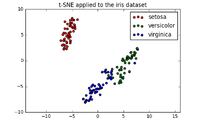
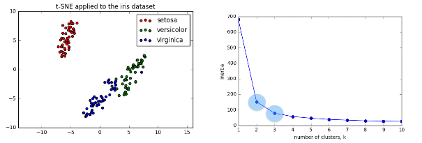
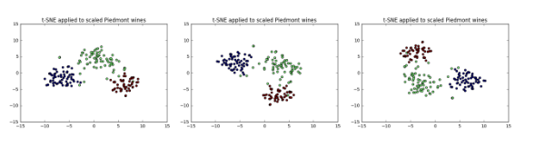
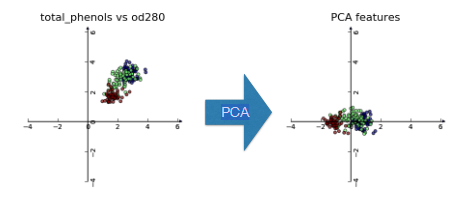
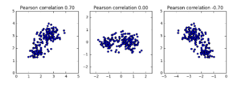
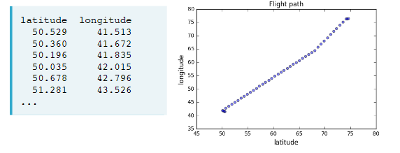
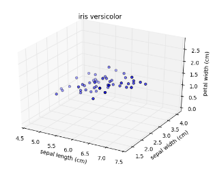
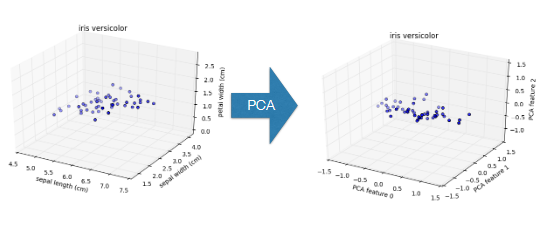
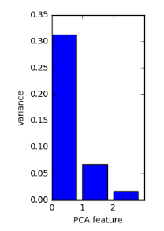

from sklearn import datasets
from sklearn.cluster import KMeans
from sklearn.preprocessing import (StandardScaler,
Normalizer,
normalize,
MaxAbsScaler)
from sklearn.pipeline import make_pipeline
from sklearn.manifold import TSNE
from sklearn.decomposition import (PCA,
TruncatedSVD,
NMF)
from sklearn.feature_extraction.text import TfidfVectorizer
import numpy as np
import pandas as pd
from scipy.cluster.hierarchy import (linkage,
dendrogram,
fcluster)
from scipy.stats import pearsonr
from scipy.sparse import csr_matrix
import matplotlib.pyplot as plt
import seaborn as sns
%matplotlib inline
plt.style.use("ggplot")
import warnings
warnings.filterwarnings("ignore", message="numpy.ufunc size changed")
warnings.filterwarnings("ignore", message="invalid value encountered in sign")Overview
Say we have a collection of customers with a variety of characteristics such as age, location, and financial history, and we wish to discover patterns and sort them into clusters. Or perhaps we have a set of texts, such as wikipedia pages, and we wish to segment them into categories based on their content. This is the world of unsupervised learning, called as such because we are not guiding, or supervising, the pattern discovery by some prediction task, but instead uncovering hidden structure from unlabeled data. Unsupervised learning encompasses a variety of techniques in machine learning, from clustering to dimension reduction to matrix factorization. We’ll explore the fundamentals of unsupervised learning and implement the essential algorithms using scikit-learn and scipy. We will explore how to cluster, transform, visualize, and extract insights from unlabeled datasets, and end the session by building a recommender system to recommend popular musical artists.
Libraries
Clustering for dataset exploration
Exploring how to discover the underlying groups (or “clusters”) in a dataset. We’ll be clustering companies using their stock market prices, and distinguishing different species by clustering their measurements.
Unsupervised Learning
Unsupervised learning
- Unsupervised learning finds patterns in data
- E.g. clustering customers by their purchases
- Compressing the data using purchase patterns (dimension reduction)
Supervised vs unsupervised learning
- Supervised learning finds patterns for a prediction task
- E.g. classify tumors as benign or cancerous (labels)
- Unsupervised learning finds patterns in data
- … but without a specific prediction task in mind
Iris dataset
- Measurements of many iris plants {% fn 1 %}
- 3 species of iris: setosa, versicolor, virginica
- Petal length, petal width, sepal length, sepal width (the features of the dataset)
Iris data is 4-dimensional
- Iris samples are points in 4 dimensional space
- Dimension = number of features
- Dimension too high to visualize!
- … but unsupervised learning gives insight
k-means clustering
- Finds clusters of samples
- Number of clusters must be specified
- Implemented in sklearn (“scikit-learn”)
Cluster labels for new samples
- New samples can be assigned to existing clusters
- k-means remembers the mean of each cluster (the “centroids”)
- Finds the nearest centroid to each new sample
Scatter plots
- Scatter plot of sepal length vs petal length
- Each point represents an iris sample
- Color points by cluster labels
- PyPlot (matplotlib.pyplot) TODO: add scatter plot
iris = datasets.load_iris()
iris.keys()dict_keys(['data', 'target', 'frame', 'target_names', 'DESCR', 'feature_names', 'filename'])samples = iris.data
samples[:5]array([[5.1, 3.5, 1.4, 0.2],
[4.9, 3. , 1.4, 0.2],
[4.7, 3.2, 1.3, 0.2],
[4.6, 3.1, 1.5, 0.2],
[5. , 3.6, 1.4, 0.2]])k-means clustering with scikit-learn
model = KMeans(n_clusters=3)
model.fit(samples)KMeans(n_clusters=3)labels = model.predict([[5.8, 4. , 1.2, 0.2]])
labelsarray([1])Cluster labels for new samples
new_samples = [[ 5.7,4.4,1.5,0.4] ,[ 6.5,3. ,5.5,1.8] ,[ 5.8,2.7,5.1,1.9]]
model.predict(new_samples)array([1, 2, 0])Scatter plots
labels_iris = model.predict(samples)xs_iris = samples[:,0]
ys_iris = samples[:,2]
_ = sns.scatterplot(xs_iris, ys_iris, hue=labels_iris)
plt.show()
points = pd.read_csv("datasets/points.csv").values
points[:5]array([[ 0.06544649, -0.76866376],
[-1.52901547, -0.42953079],
[ 1.70993371, 0.69885253],
[ 1.16779145, 1.01262638],
[-1.80110088, -0.31861296]])xs_points = points[:,0]
ys_points = points[:,1]
_ = sns.scatterplot(xs_points, ys_points)
plt.show()
There are three clusters
Clustering 2D points
From the scatter plot we saw that the points seem to separate into 3 clusters. we’ll now create a KMeans model to find 3 clusters, and fit it to the data points. After the model has been fit, we’ll obtain the cluster labels for some new points using the .predict() method.
new_points = pd.read_csv("datasets/new_points.csv").values
new_points[:5]array([[ 0.40023333, -1.26544471],
[ 0.80323037, 1.28260167],
[-1.39507552, 0.05572929],
[-0.34119268, -1.07661994],
[ 1.54781747, 1.40250049]])# Create a KMeans instance with 3 clusters: model
model_points = KMeans(n_clusters=3)
# Fit model to points
model_points.fit(points)
# Determine the cluster labels of new_points: labels
labels_points = model_points.predict(new_points)
# Print cluster labels of new_points
print(labels_points)[0 2 1 0 2 0 2 2 2 1 0 2 2 1 1 2 1 1 2 2 1 2 0 2 0 1 2 1 1 0 0 2 2 2 1 0 2
2 0 2 1 0 0 1 0 2 1 1 2 2 2 2 1 1 0 0 1 1 1 0 0 2 2 2 0 2 1 2 0 1 0 0 0 2
0 1 1 0 2 1 0 1 0 2 1 2 1 0 2 2 2 0 2 2 0 1 1 1 1 0 2 0 1 1 0 0 2 0 1 1 0
1 1 1 2 2 2 2 1 1 2 0 2 1 2 0 1 2 1 1 2 1 2 1 0 2 0 0 2 1 0 2 0 0 1 2 2 0
1 0 1 2 0 1 1 0 1 2 2 1 2 1 1 2 2 0 2 2 1 0 1 0 0 2 0 2 2 0 0 1 0 0 0 1 2
2 0 1 0 1 1 2 2 2 0 2 2 2 1 1 0 2 0 0 0 1 2 2 2 2 2 2 1 1 2 1 1 1 1 2 1 1
2 2 0 1 0 0 1 0 1 0 1 2 2 1 2 2 2 1 0 0 1 2 2 1 2 1 1 2 1 1 0 1 0 0 0 2 1
1 1 0 2 0 1 0 1 1 2 0 0 0 1 2 2 2 0 2 1 1 2 0 0 1 0 0 1 0 2 0 1 1 1 1 2 1
1 2 2 0]We’ve successfully performed k-Means clustering and predicted the labels of new points. But it is not easy to inspect the clustering by just looking at the printed labels. A visualization would be far more useful. We’ll inspect the clustering with a scatter plot!
Inspect clustering
Let’s now inspect the clustering we performed!
# Assign the columns of new_points: xs and ys
xs_np = new_points[:,0]
ys_np = new_points[:,1]
# Make a scatter plot of xs and ys, using labels to define the colors
_ = plt.scatter(xs_np, ys_np, c=labels_points, alpha=.5)
# Assign the cluster centers: centroids
centroids_p = model_points.cluster_centers_
# Assign the columns of centroids: centroids_x, centroids_y
centroids_x_p = centroids_p[:,0]
centroids_y_p = centroids_p[:,1]
# Make a scatter plot of centroids_x and centroids_y
_ = plt.scatter(centroids_x_p, centroids_y_p, marker="D", s=50)
plt.show()
The clustering looks great! But how can we be sure that 3 clusters is the correct choice? In other words, how can we evaluate the quality of a clustering?
Evaluating a clustering
- Can check correspondence with e.g. iris species
- … but what if there are no species to check against?
- Measure quality of a clustering
- Informs choice of how many clusters to look for
Iris: clusters vs species
- k-means found 3 clusters amongst the iris samples
Cross tabulation with pandas
- Clusters vs species is a “cross-tabulation”
iris_ct = pd.DataFrame({'labels':labels_iris, 'species':iris.target})
iris_ct.head()| labels | species | |
|---|---|---|
| 0 | 1 | 0 |
| 1 | 1 | 0 |
| 2 | 1 | 0 |
| 3 | 1 | 0 |
| 4 | 1 | 0 |
np.unique(iris.target)array([0, 1, 2])iris_ct.species.unique()array([0, 1, 2])iris.target_namesarray(['setosa', 'versicolor', 'virginica'], dtype='<U10')iris_ct['species'] = iris_ct.species.map({0:'setosa', 1:'versicolor', 2:'virginica'})
iris_ct.head()| labels | species | |
|---|---|---|
| 0 | 1 | setosa |
| 1 | 1 | setosa |
| 2 | 1 | setosa |
| 3 | 1 | setosa |
| 4 | 1 | setosa |
Crosstab of labels and species
pd.crosstab(iris_ct.labels, iris_ct.species)| species | setosa | versicolor | virginica |
|---|---|---|---|
| labels | |||
| 0 | 0 | 48 | 14 |
| 1 | 50 | 0 | 0 |
| 2 | 0 | 2 | 36 |
Measuring clustering quality
- Using only samples and their cluster labels
- A good clustering has tight clusters
- … and samples in each cluster bunched together
Inertia measures clustering quality
- Measures how spread out the clusters are (lower is better)
- Distance from each sample to centroid of its cluster
- After
fit(), available as attributeinertia_- k-means attempts to minimize the inertia when choosing clusters
model.inertia_78.851441426146The number of clusters
- Clusterings of the iris dataset with different numbers of clusters
- More clusters means lower inertia
- What is the best number of clusters?
How many clusters to choose?
- A good clustering has tight clusters (so low inertia)
- … but not too many clusters!
- Choose an “elbow” in the inertia plot
- Where inertia begins to decrease more slowly
- E.g. for iris dataset, 3 is a good choice
How many clusters of grain?
samples_grain = pd.read_csv("datasets/samples_grain.csv").values
samples_grain[:5]array([[15.26 , 14.84 , 0.871 , 5.763 , 3.312 , 2.221 , 5.22 ],
[14.88 , 14.57 , 0.8811, 5.554 , 3.333 , 1.018 , 4.956 ],
[14.29 , 14.09 , 0.905 , 5.291 , 3.337 , 2.699 , 4.825 ],
[13.84 , 13.94 , 0.8955, 5.324 , 3.379 , 2.259 , 4.805 ],
[16.14 , 14.99 , 0.9034, 5.658 , 3.562 , 1.355 , 5.175 ]])an array samples contains the measurements (such as area, perimeter, length, and several others) of samples of grain. What’s a good number of clusters in this case?
ks_grain = range(1, 6)
inertias_grain = []
for k in ks_grain:
# Create a KMeans instance with k clusters: model
model_grain = KMeans(n_clusters=k)
# Fit model to samples
model_grain.fit(samples_grain)
# Append the inertia to the list of inertias
inertias_grain.append(model_grain.inertia_)
# Plot ks vs inertias
plt.plot(ks_grain, inertias_grain, '-o')
plt.xlabel('number of clusters, k')
plt.ylabel('inertia')
plt.xticks(ks_grain)
plt.show()
The inertia decreases very slowly from 3 clusters to 4, so it looks like 3 clusters would be a good choice for this data.
Evaluating the grain clustering
In fact, the grain samples come from a mix of 3 different grain varieties: “Kama”, “Rosa” and “Canadian”. We will cluster the grain samples into three clusters, and compare the clusters to the grain varieties using a cross-tabulation.
varieties = pd.read_csv("datasets/varieties.csv")["0"].to_list()
varieties[:5]['Kama wheat', 'Kama wheat', 'Kama wheat', 'Kama wheat', 'Kama wheat']list varieties gives the grain variety for each sample.
# Create a KMeans model with 3 clusters: model
model_grain = KMeans(n_clusters=3)
# Use fit_predict to fit model and obtain cluster labels: labels
labels_grain = model_grain.fit_predict(samples_grain)
# Create a DataFrame with labels and varieties as columns: df
grain_df = pd.DataFrame({'labels': labels_grain, 'varieties': varieties})
# Create crosstab: ct
ct_grain = pd.crosstab(grain_df.labels, grain_df.varieties)
# Display ct
ct_grain| varieties | Canadian wheat | Kama wheat | Rosa wheat |
|---|---|---|---|
| labels | |||
| 0 | 0 | 1 | 60 |
| 1 | 2 | 60 | 10 |
| 2 | 68 | 9 | 0 |
The cross-tabulation shows that the 3 varieties of grain separate really well into 3 clusters. But depending on the type of data you are working with, the clustering may not always be this good. Is there anything we can do in such situations to improve the clustering?
Transforming features for better clusterings
Piedmont wines dataset {% fn 2 %}
- 178 samples from 3 distinct varieties of red wine: Barolo, Grignolino and Barbera
- Features measure chemical composition e.g. alcohol content
- … also visual properties like “color intensity”
Feature variancesfeature
- The wine features have very different variances!
- Variance of a feature measures spread of its values
StandardScaler
- In kmeans: feature variance = feature influence
- StandardScaler transforms each feature to have mean 0 and variance 1
- Features are said to be “standardized”
Similar methods
StandardScalerandKMeanshave similar methods- Use
fit()/transform()withStandardScaler- Use
fit()/predict()withKMeans
StandardScaler, thenKMeans
- Need to perform two steps:
StandardScaler, thenKMeans- Use sklearn pipeline to combine multiple steps
- Data flows from one step into the next
sklearn preprocessing steps
StandardScaleris a “preprocessing” stepMaxAbsScalerandNormalizerare other examples
Scaling fish data for clustering
samples_fish = pd.read_csv("datasets/samples_fish.csv").values
samples_fish[:5]array([[242. , 23.2, 25.4, 30. , 38.4, 13.4],
[290. , 24. , 26.3, 31.2, 40. , 13.8],
[340. , 23.9, 26.5, 31.1, 39.8, 15.1],
[363. , 26.3, 29. , 33.5, 38. , 13.3],
[430. , 26.5, 29. , 34. , 36.6, 15.1]])an array samples_fish {% fn 3 %} gives measurements of fish. Each row represents an individual fish. The measurements, such as weight in grams, length in centimeters, and the percentage ratio of height to length, have very different scales. In order to cluster this data effectively, we’ll need to standardize these features first. We’ll build a pipeline to standardize and cluster the data.
# Create scaler: scaler_fish
scaler_fish = StandardScaler()
# Create KMeans instance: kmeans_fish
kmeans_fish = KMeans(n_clusters=4)
# Create pipeline: pipeline_fish
pipeline_fish = make_pipeline(scaler_fish, kmeans_fish)Now that We’ve built the pipeline, we’ll use it to cluster the fish by their measurements.
Clustering the fish data
species_fish = pd.read_csv("datasets/species_fish.csv")["0"].to_list()
species_fish[:5]['Bream', 'Bream', 'Bream', 'Bream', 'Bream']We’ll now use the standardization and clustering pipeline to cluster the fish by their measurements, and then create a cross-tabulation to compare the cluster labels with the fish species.
# Fit the pipeline to samples
pipeline_fish.fit(samples_fish)
# Calculate the cluster labels: labels_fish
labels_fish = pipeline_fish.predict(samples_fish)
# Create a DataFrame with labels and species as columns: df
fish_df = pd.DataFrame({'labels':labels_fish, 'species':species_fish})
# Create crosstab: ct
ct_fish = pd.crosstab(fish_df.labels, fish_df.species)
# Display ct
ct_fish| species | Bream | Pike | Roach | Smelt |
|---|---|---|---|---|
| labels | ||||
| 0 | 33 | 0 | 1 | 0 |
| 1 | 1 | 0 | 19 | 1 |
| 2 | 0 | 17 | 0 | 0 |
| 3 | 0 | 0 | 0 | 13 |
It looks like the fish data separates really well into 4 clusters!
Clustering stocks using KMeans
We’ll cluster companies using their daily stock price movements (i.e. the dollar difference between the closing and opening prices for each trading day).
movements = pd.read_csv("datasets/movements.csv").values
movements[:5]array([[ 0.58 , -0.220005, -3.409998, ..., -5.359962, 0.840019,
-19.589981],
[ -0.640002, -0.65 , -0.210001, ..., -0.040001, -0.400002,
0.66 ],
[ -2.350006, 1.260009, -2.350006, ..., 4.790009, -1.760009,
3.740021],
[ 0.109997, 0. , 0.260002, ..., 1.849999, 0.040001,
0.540001],
[ 0.459999, 1.77 , 1.549999, ..., 1.940002, 1.130005,
0.309998]])A NumPy array movements of daily price movements from 2010 to 2015 (obtained from Yahoo! Finance), where each row corresponds to a company, and each column corresponds to a trading day.
Some stocks are more expensive than others. To account for this, we will include a Normalizer at the beginning of the pipeline. The Normalizer will separately transform each company’s stock price to a relative scale before the clustering begins.
Note
Normalizer() is different to StandardScaler(). While StandardScaler() standardizes features (such as the features of the fish data) by removing the mean and scaling to unit variance, Normalizer() rescales each sample - here, each company’s stock price - independently of the other.
# Create a normalizer: normalizer_movements
normalizer_movements = Normalizer()
# Create a KMeans model with 10 clusters: kmeans_movements
kmeans_movements = KMeans(n_clusters=10)
# Make a pipeline chaining normalizer and kmeans: pipeline_movements
pipeline_movements = make_pipeline(normalizer_movements, kmeans_movements)
# Fit pipeline to the daily price movements
pipeline_movements.fit(movements)Pipeline(steps=[('normalizer', Normalizer()),
('kmeans', KMeans(n_clusters=10))])Now that the pipeline has been set up, we can find out which stocks move together
Which stocks move together?
So which company have stock prices that tend to change in the same way? We’ll now inspect the cluster labels from the clustering to find out.
companies_movements=pd.read_csv("datasets/companies_movements.csv")
companies_movements.head()| 0 | |
|---|---|
| 0 | Apple |
| 1 | AIG |
| 2 | Amazon |
| 3 | American express |
| 4 | Boeing |
companies_movements=companies_movements["0"].to_list()
companies_movements[:5]['Apple', 'AIG', 'Amazon', 'American express', 'Boeing']a list companies_movements of the company names
# Predict the cluster labels: labels_movements
labels_movements = pipeline_movements.predict(movements)
# Create a DataFrame aligning labels and companies: df
movements_df = pd.DataFrame({'labels': labels_movements, 'companies': companies_movements})
# Display df sorted by cluster label
movements_df.sort_values("labels")| labels | companies | |
|---|---|---|
| 18 | 0 | Goldman Sachs |
| 26 | 0 | JPMorgan Chase |
| 16 | 0 | General Electrics |
| 15 | 0 | Ford |
| 5 | 0 | Bank of America |
| 55 | 0 | Wells Fargo |
| 3 | 0 | American express |
| 1 | 0 | AIG |
| 22 | 1 | HP |
| 20 | 1 | Home Depot |
| 58 | 1 | Xerox |
| 30 | 1 | MasterCard |
| 23 | 1 | IBM |
| 14 | 1 | Dell |
| 54 | 1 | Walgreen |
| 32 | 1 | 3M |
| 11 | 1 | Cisco |
| 33 | 1 | Microsoft |
| 47 | 1 | Symantec |
| 8 | 1 | Caterpillar |
| 13 | 1 | DuPont de Nemours |
| 39 | 2 | Pfizer |
| 53 | 2 | Valero Energy |
| 37 | 2 | Novartis |
| 42 | 2 | Royal Dutch Shell |
| 6 | 2 | British American Tobacco |
| 57 | 2 | Exxon |
| 19 | 2 | GlaxoSmithKline |
| 35 | 2 | Navistar |
| 46 | 2 | Sanofi-Aventis |
| 52 | 2 | Unilever |
| 12 | 2 | Chevron |
| 10 | 2 | ConocoPhillips |
| 49 | 2 | Total |
| 43 | 2 | SAP |
| 44 | 2 | Schlumberger |
| 40 | 3 | Procter Gamble |
| 27 | 3 | Kimberly-Clark |
| 56 | 3 | Wal-Mart |
| 9 | 3 | Colgate-Palmolive |
| 25 | 3 | Johnson & Johnson |
| 2 | 4 | Amazon |
| 59 | 4 | Yahoo |
| 21 | 5 | Honda |
| 45 | 5 | Sony |
| 34 | 5 | Mitsubishi |
| 48 | 5 | Toyota |
| 7 | 5 | Canon |
| 24 | 6 | Intel |
| 50 | 6 | Taiwan Semiconductor Manufacturing |
| 51 | 6 | Texas instruments |
| 28 | 7 | Coca Cola |
| 31 | 7 | McDonalds |
| 41 | 7 | Philip Morris |
| 38 | 7 | Pepsi |
| 29 | 8 | Lookheed Martin |
| 4 | 8 | Boeing |
| 36 | 8 | Northrop Grumman |
| 17 | 9 | Google/Alphabet |
| 0 | 9 | Apple |
Visualization with hierarchical clustering and t-SNE
We’ll Explore two unsupervised learning techniques for data visualization, hierarchical clustering and t-SNE. Hierarchical clustering merges the data samples into ever-coarser clusters, yielding a tree visualization of the resulting cluster hierarchy. t-SNE maps the data samples into 2d space so that the proximity of the samples to one another can be visualized.
Visualizing hierarchies
Visualisations communicate insight
- “t-SNE” : Creates a 2D map of a dataset (later)
- “Hierarchical clustering”
A hierarchy of groups
- Groups of living things can form a hierarchy
- Clusters are contained in one another
Eurovision scoring dataset {% fn 4 %}
- Countries gave scores to songs performed at the Eurovision 2016
- 2D array of scores
- Rows are countries, columns are songs
Hierarchical clustering
- Every country begins in a separate cluster
- At each step, the two closest clusters are merged
- Continue until all countries in a single cluster
- This is “agglomerative” hierarchical clustering
The dendrogram of a hierarchical clustering
- Read from the bottom up
- Vertical lines represent clusters
With 5 data samples, there would be 4 merge operations, and with 6 data samples, there would be 5 merges, and so on.
Hierarchical clustering of the grain data
the SciPy linkage() function performs hierarchical clustering on an array of samples. We will use the linkage() function to obtain a hierarchical clustering of the grain samples, and use dendrogram() to visualize the result.
# Calculate the linkage: mergings_g
mergings_g = linkage(samples_grain, method='complete')
# Plot the dendrogram, using varieties as labels
plt.figure(figsize=(20,7))
dendrogram(mergings_g,
labels=varieties,
leaf_rotation=90,
leaf_font_size=8,
)
plt.show()
Dendrograms are a great way to illustrate the arrangement of the clusters produced by hierarchical clustering.
Hierarchies of stocks
We used k-means clustering to cluster companies according to their stock price movements. Now, we’ll perform hierarchical clustering of the companies. SciPy hierarchical clustering doesn’t fit into a sklearn pipeline, so we’ll need to use the normalize() function from sklearn.preprocessing instead of Normalizer.
# Normalize the movements: normalized_movements
normalized_movements = normalize(movements)
# Calculate the linkage: mergings
mergings_m = linkage(normalized_movements, method="complete")
# Plot the dendrogram
plt.figure(figsize=(20,10))
dendrogram(mergings_m, labels=companies_movements, leaf_font_size=12, leaf_rotation=90)
plt.show()
You can produce great visualizations such as this with hierarchical clustering, but it can be used for more than just visualizations.
Cluster labels in hierarchical clustering
Cluster labels in hierarchical clustering
- Not only a visualisation tool!
- Cluster labels at any intermediate stage can be recovered
- For use in e.g. cross-tabulations
Intermediate clusterings & height on dendrogram
- E.g. at height 15: Bulgaria, Cyprus, Greece are one cluster
- Russia and Moldova are another
- Armenia in a cluster on its own
Dendrograms show cluster distances
- Height on dendrogram = distance between merging clusters
- E.g. clusters with only Cyprus and Greece had distance approx. 6
- This new cluster distance approx. 12 from cluster with only Bulgaria
Intermediate clusterings & height on dendrogram
- Height on dendrogram specifies max. distance between merging clusters
- Don’t merge clusters further apart than this (e.g. 15)
Distance between clusters
- Defined by a “linkage method”
- Specified via method parameter, e.g. linkage(samples, method=“complete”)
- In “complete” linkage: distance between clusters is max. distance between their samples
- Different linkage method, different hierarchical clustering!
Extracting cluster labels
- Use the
fclustermethod- Returns a NumPy array of cluster labels
the linkage method defines how the distance between clusters is measured. In complete linkage, the distance between clusters is the distance between the furthest points of the clusters. In single linkage, the distance between clusters is the distance between the closest points of the clusters.
Different linkage, different hierarchical clustering!
We will perform a hierarchical clustering of the voting countries with ‘single’ linkage. Different linkage, different hierarchical clustering!
samples_eurovision = pd.read_csv("datasets/samples_eurovision.csv").values
samples_eurovision[:5]array([[ 2., 12., 0., 0., 0., 8., 0., 0., 0., 0., 0., 0., 1.,
0., 10., 0., 4., 0., 5., 7., 0., 0., 3., 0., 6., 0.],
[12., 0., 4., 0., 0., 0., 0., 6., 0., 7., 8., 0., 3.,
0., 0., 0., 0., 5., 1., 12., 0., 0., 2., 0., 10., 0.],
[ 0., 12., 3., 0., 12., 10., 0., 0., 0., 7., 0., 0., 0.,
0., 0., 0., 1., 6., 0., 5., 0., 2., 0., 0., 8., 4.],
[ 0., 3., 12., 0., 0., 5., 0., 0., 0., 1., 0., 2., 0.,
0., 0., 0., 0., 0., 12., 8., 4., 0., 7., 6., 10., 0.],
[ 0., 2., 0., 12., 0., 8., 0., 0., 0., 4., 1., 0., 7.,
6., 0., 0., 0., 5., 3., 12., 0., 0., 0., 0., 10., 0.]])country_names_eurovision = pd.read_csv("datasets/country_names_eurovision.csv")["0"].to_list()
country_names_eurovision[:5]['Albania', 'Armenia', 'Australia', 'Austria', 'Azerbaijan']len(country_names_eurovision)42# Calculate the linkage: mergings
mergings_ev = linkage(samples_eurovision, method='single')
# Plot the dendrogram
plt.figure(figsize=(20,9))
dendrogram(mergings_ev, labels=country_names_eurovision, leaf_rotation=90, leaf_font_size=12)
plt.show()
Extracting the cluster labels
We saw that the intermediate clustering of the grain samples at height 6 has 3 clusters. We will use the fcluster() function to extract the cluster labels for this intermediate clustering, and compare the labels with the grain varieties using a cross-tabulation.
# Use fcluster to extract labels: labels_g
labels_g = fcluster(mergings_g,6, criterion='distance')
# Create a DataFrame with labels and varieties as columns: df
grain_df = pd.DataFrame({'labels': labels_g, 'varieties': varieties})
# Create crosstab: ct
grain_ct = pd.crosstab(grain_df.labels, grain_df.varieties)
# Display ct
print(grain_ct)varieties Canadian wheat Kama wheat Rosa wheat
labels
1 0 0 47
2 0 52 23
3 13 1 0
4 57 17 0We’ve now mastered the fundamentals of k-Means and agglomerative hierarchical clustering. Next, we’ll explore t-SNE, which is a powerful tool for visualizing high dimensional data.
t-SNE for 2-dimensional maps
t-SNE for 2-dimensional maps
- t-SNE = “t-distributed stochastic neighbor embedding”
- Maps samples to 2D space (or 3D)
- Map approximately preserves nearness of samples
- Great for inspecting datasets
t-SNE on the iris dataset
- Iris dataset has 4 measurements, so samples are 4-dimensional
- t-SNE maps samples to 2D space
- t-SNE didn’t know that there were different species
- … yet kept the species mostly separate

Interpreting t-SNE scatter plots
- “versicolor” and “virginica” harder to distinguish from one another
- Consistent with k-means inertia plot: could argue for 2 clusters, or for 3

t-SNE in sklearnIn
- 2D NumPy array samples
- List species giving species of labels as number (0, 1, or 2)
samples[:5]array([[5.1, 3.5, 1.4, 0.2],
[4.9, 3. , 1.4, 0.2],
[4.7, 3.2, 1.3, 0.2],
[4.6, 3.1, 1.5, 0.2],
[5. , 3.6, 1.4, 0.2]])iris.target[:5]array([0, 0, 0, 0, 0])t-SNE in sklearn
model_i = TSNE(learning_rate=100)
transformed_i = model_i.fit_transform(samples)
xs_i = transformed_i[:,0]
ys_i = transformed_i[:,1]
plt.scatter(xs_i, ys_i, c=iris.target)
plt.show()
t-SNE has only
fit_transform()
- Has a
fit_transform()method- Simultaneously fits the model and transforms the data
- Has no separate
fit()ortransform()methods- Can’t extend the map to include new data samples
- Must start over each time!
t-SNE learning rate
- Choose learning rate for the dataset
- Wrong choice: points bunch together
- Try values between 50 and 200
Different every time
- t-SNE features are different every time
- Piedmont wines, 3 runs, 3 different scatter plots!
- … however: The wine varieties (=colors) have same position relative to one another

t-SNE visualization of grain dataset
We’ll apply t-SNE to the grain samples data and inspect the resulting t-SNE features using a scatter plot.
variety_numbers_g = pd.read_csv("datasets/variety_numbers_grains.csv")["0"].to_list()
variety_numbers_g[:5][1, 1, 1, 1, 1]samples_grain[:5]array([[15.26 , 14.84 , 0.871 , 5.763 , 3.312 , 2.221 , 5.22 ],
[14.88 , 14.57 , 0.8811, 5.554 , 3.333 , 1.018 , 4.956 ],
[14.29 , 14.09 , 0.905 , 5.291 , 3.337 , 2.699 , 4.825 ],
[13.84 , 13.94 , 0.8955, 5.324 , 3.379 , 2.259 , 4.805 ],
[16.14 , 14.99 , 0.9034, 5.658 , 3.562 , 1.355 , 5.175 ]])# Create a TSNE instance: model
model_g = TSNE(learning_rate=200)
# Apply fit_transform to samples: tsne_features
tsne_features_g = model_g.fit_transform(samples_grain)
# Select the 0th feature: xs
xs_g = tsne_features_g[:,0]
# Select the 1st feature: ys
ys_g = tsne_features_g[:,1]
# Scatter plot, coloring by variety_numbers_g
plt.scatter(xs_g, ys_g, c=variety_numbers_g)
plt.show()
the t-SNE visualization manages to separate the 3 varieties of grain samples. But how will it perform on the stock data?
t-SNE map of the stock market
t-SNE provides great visualizations when the individual samples can be labeled. We’ll apply t-SNE to the company stock price data. A scatter plot of the resulting t-SNE features, labeled by the company names, gives a map of the stock market! The stock price movements for each company are available as the array normalized_movements. The list companies gives the name of each company.
# Create a TSNE instance: model
model_m = TSNE(learning_rate=50)
# Apply fit_transform to normalized_movements: tsne_features
tsne_features_m = model_m.fit_transform(normalized_movements)
# Select the 0th feature: xs
xs_m = tsne_features_m[:,0]
# Select the 1th feature: ys
ys_m = tsne_features_m[:,1]
# Scatter plot
plt.figure(figsize=(20,14))
plt.scatter(xs_m, ys_m)
# Annotate the points
for x, y, company in zip(xs_m, ys_m, companies_movements):
plt.annotate(company, (x, y), fontsize=12)
plt.show()
It’s visualizations such as this that make t-SNE such a powerful tool for extracting quick insights from high dimensional data.
Decorrelating the data and dimension reduction
Dimension reduction summarizes a dataset using its common occuring patterns. We’ll explore the most fundamental of dimension reduction techniques, “Principal Component Analysis” (“PCA”). PCA is often used before supervised learning to improve model performance and generalization. It can also be useful for unsupervised learning. For example, you’ll employ a variant of PCA will allow you to cluster Wikipedia articles by their content!
Visualizing the PCA transformation
Dimension reduction
- More efficient storage and computation
- Remove less-informative “noise” features
- … which cause problems for prediction tasks, e.g. classification, regression
Principal Component Analysis
- PCA = “Principal Component Analysis”
- Fundamental dimension reduction technique
- First step “decorrelation” (considered below)
- Second step reduces dimension (considered later)
PCA aligns data with axes
- Rotates data samples to be aligned with axes
- Shifts data samples so they have mean 0
- No information is lostPCA

PCA follows the fit/transform pattern
PCAa scikit-learn component likeKMeansorStandardScalerfit()learns the transformation from given datatransform()applies the learned transformationtransform()can also be applied to new data
wine = pd.read_csv("datasets/wine.csv")
wine.head()| class_label | class_name | alcohol | malic_acid | ash | alcalinity_of_ash | magnesium | total_phenols | flavanoids | nonflavanoid_phenols | proanthocyanins | color_intensity | hue | od280 | proline | |
|---|---|---|---|---|---|---|---|---|---|---|---|---|---|---|---|
| 0 | 1 | Barolo | 14.23 | 1.71 | 2.43 | 15.6 | 127 | 2.80 | 3.06 | 0.28 | 2.29 | 5.64 | 1.04 | 3.92 | 1065 |
| 1 | 1 | Barolo | 13.20 | 1.78 | 2.14 | 11.2 | 100 | 2.65 | 2.76 | 0.26 | 1.28 | 4.38 | 1.05 | 3.40 | 1050 |
| 2 | 1 | Barolo | 13.16 | 2.36 | 2.67 | 18.6 | 101 | 2.80 | 3.24 | 0.30 | 2.81 | 5.68 | 1.03 | 3.17 | 1185 |
| 3 | 1 | Barolo | 14.37 | 1.95 | 2.50 | 16.8 | 113 | 3.85 | 3.49 | 0.24 | 2.18 | 7.80 | 0.86 | 3.45 | 1480 |
| 4 | 1 | Barolo | 13.24 | 2.59 | 2.87 | 21.0 | 118 | 2.80 | 2.69 | 0.39 | 1.82 | 4.32 | 1.04 | 2.93 | 735 |
Using scikit-learn PCA
samples_wine= array of two wine features (total_phenols & od280)
samples_wine = wine[['total_phenols', 'od280']].values
samples_wine[:5]array([[2.8 , 3.92],
[2.65, 3.4 ],
[2.8 , 3.17],
[3.85, 3.45],
[2.8 , 2.93]])model_w = PCA()
model_w.fit(samples_wine)PCA()transformed_w = model_w.transform(samples_wine)PCA features
- Rows of transformed correspond to samples
- Columns of transformed are the “PCA features”
- Row gives PCA feature values of corresponding sample
transformed_w[:5]array([[nan, nan],
[nan, nan],
[nan, nan],
[nan, nan],
[nan, nan]])PCA features are not correlated
- Features of dataset are often correlated, e.g. total_phenols and od280
- PCA aligns the data with axes
- Resulting PCA features are not linearly correlated (“decorrelation”)PCA
Pearson correlation
- Measures linear correlation of features
- Value between -1 and 1
- Value of 0 means no linear correlation

Principal components
- “Principal components” = directions of variance
- PCA aligns principal components with the axes
- Available as
components_attribute of PCA object- Each row defines displacement from mean
model_w.components_array([[nan, nan],
[nan, nan]])Correlated data in nature
We have array grains giving the width and length of samples of grain. We suspect that width and length will be correlated. To confirm this, let’s make a scatter plot of width vs length and measure their Pearson correlation.
# Assign the 0th column of grains: width
width_g = samples_grain[:,4]
# Assign the 1st column of grains: length
length_g = samples_grain[:,3]
# Scatter plot width vs length
plt.scatter(width_g, length_g)
plt.axis('equal')
plt.show()
# Calculate the Pearson correlation
correlation_g, pvalue_g = pearsonr(width_g, length_g)
# Display the correlation
correlation_g
0.8604149377143469As you would expect, the width and length of the grain samples are highly correlated.
Decorrelating the grain measurements with PCA
We observed that the width and length measurements of the grain are correlated. Now, we’ll use PCA to decorrelate these measurements, then plot the decorrelated points and measure their Pearson correlation.
grains = pd.read_csv("datasets/grains.csv").values
grains[:5]array([[3.312, 5.763],
[3.333, 5.554],
[3.337, 5.291],
[3.379, 5.324],
[3.562, 5.658]])# Create PCA instance: model_g
model_g = PCA()
# Apply the fit_transform method of model to grains: pca_features
pca_features_g = model_g.fit_transform(grains)
# Assign 0th column of pca_features: xs
xs_g = pca_features_g[:,0]
# Assign 1st column of pca_features: ys
ys_g = pca_features_g[:,1]
# Scatter plot xs vs ys
plt.scatter(xs_g, ys_g)
plt.axis('equal')
plt.show()
# Calculate the Pearson correlation of xs and ys
correlation_g, pvalue_g = pearsonr(xs_g, ys_g)
# Display the correlation
correlation_g
1.5634195327240974e-16principal components have to align with the axes of the point cloud.
Intrinsic dimension
Intrinsic dimension of a flight path
- 2 features: longitude and latitude at points along a flight path
- Dataset appears to be 2-dimensional
- But can approximate using one feature: displacement along flight path
- Is intrinsically 1-dimensiona

Intrinsic dimension
- Intrinsic dimension = number of features needed to approximate the dataset
- Essential idea behind dimension reduction
- What is the most compact representation of the samples?
- Can be detected with PCA
Versicolor dataset
- “versicolor”, one of the iris species
- Only 3 features: sepal length, sepal width, and petal width
- Samples are points in 3D space
Versicolor dataset has intrinsic dimension 2
- Samples lie close to a flat 2-dimensional sheet
- So can be approximated using 2 features

PCA identifies intrinsic dimension
- Scatter plots work only if samples have 2 or 3 features
- PCA identifies intrinsic dimension when samples have any number of features
- Intrinsic dimension = number of PCA features with significant variance
PCA of the versicolor samples

PCA features are ordered by variance descending

Variance and intrinsic dimension
- Intrinsic dimension is number of PCA features with significant variance
- In our example: the first two PCA features
- So intrinsic dimension is 2
iris.target_namesarray(['setosa', 'versicolor', 'virginica'], dtype='<U10')versicolor = pd.DataFrame(iris.data, columns=iris.feature_names)
versicolor['target'] = iris.target
versicolor = versicolor[versicolor.target==1]
versicolor.head()| sepal length (cm) | sepal width (cm) | petal length (cm) | petal width (cm) | target | |
|---|---|---|---|---|---|
| 50 | 7.0 | 3.2 | 4.7 | 1.4 | 1 |
| 51 | 6.4 | 3.2 | 4.5 | 1.5 | 1 |
| 52 | 6.9 | 3.1 | 4.9 | 1.5 | 1 |
| 53 | 5.5 | 2.3 | 4.0 | 1.3 | 1 |
| 54 | 6.5 | 2.8 | 4.6 | 1.5 | 1 |
samples_versicolor = versicolor[['sepal length (cm)', 'sepal width (cm)', 'petal width (cm)']].values
samples_versicolor[:5]array([[7. , 3.2, 1.4],
[6.4, 3.2, 1.5],
[6.9, 3.1, 1.5],
[5.5, 2.3, 1.3],
[6.5, 2.8, 1.5]])Plotting the variances of PCA features
- samples_versicolor = array of versicolor samples
pca_versicolor = PCA()
pca_versicolor.fit(samples_versicolor)PCA()features_versicolor = range(pca_versicolor.n_components_)
plt.bar(features_versicolor, pca_versicolor.explained_variance_)
plt.xticks(features_versicolor)
plt.xlabel("PCA feature")
plt.ylabel("Variance")
plt.show()
Intrinsic dimension can be ambiguous
- Intrinsic dimension is an idealization
- … there is not always one correct answer!
- Piedmont wines: could argue for 2, or for 3, or more
The first principal component
The first principal component of the data is the direction in which the data varies the most. We will use PCA to find the first principal component of the length and width measurements of the grain samples, and represent it as an arrow on the scatter plot.
# Make a scatter plot of the untransformed points
plt.scatter(grains[:,0], grains[:,1])
# Fit model to points
model_g.fit(grains)
# Get the mean of the grain samples: mean
mean_g = model_g.mean_
# Get the first principal component: first_pc
first_pc_g = model_g.components_[0,:]
# Plot first_pc as an arrow, starting at mean
plt.arrow(mean_g[0], mean_g[1], first_pc_g[0], first_pc_g[1], color='blue', width=0.01)
# Keep axes on same scale
plt.axis('equal')
plt.show()
This is the direction in which the grain data varies the most.
Variance of the PCA features
The fish dataset is 6-dimensional. But what is its intrinsic dimension? We will make a plot of the variances of the PCA features to find out. We’ll need to standardize the features first.
# Create scaler: scaler
scaler_fish = StandardScaler()
# Create a PCA instance: pca
pca_fish = PCA()
# Create pipeline: pipeline
pipeline_fish = make_pipeline(scaler_fish, pca_fish)
# Fit the pipeline to 'samples'
pipeline_fish.fit(samples_fish)
# Plot the explained variances
features_fish = range(pca_fish.n_components_)
plt.bar(features_fish, pca_fish.explained_variance_)
plt.xlabel('PCA feature')
plt.ylabel('variance')
plt.xticks(features_fish)
plt.show()
It looks like PCA features 0 and 1 have significant variance. Since PCA features 0 and 1 have significant variance, the intrinsic dimension of this dataset appears to be 2.
Dimension reduction with PCA
Dimension reduction
- Represents same data, using less features
- Important part of machine-learning pipelines
- Can be performed using PCA
Dimension reduction with PCA
- PCA features are in decreasing order of variance
- Assumes the low variance features are “noise”
- … and high variance features are informative
Dimension reduction with PCA
- Specify how many features to keep
- E.g.
PCA(n_components=2)- Keeps the first 2 PCA features
- Intrinsic dimension is a good choice
Dimension reduction of iris dataset
samples= array of iris measurements (4 features)species= list of iris species numbers
Dimension reduction with PCA
- Discards low variance PCA features
- Assumes the high variance features are informative
- Assumption typically holds in practice (e.g. for iris)
Word frequency arrays
- Rows represent documents, columns represent words
- Entries measure presence of each word in each document
- … measure using “tf-idf” (more later)
Sparse arrays and csr_matrix
- Array is “sparse”: most entries are zero
- Can use
scipy.sparse.csr_matrixinstead of NumPy arraycsr_matrixremembers only the non-zero entries (saves space!)
TruncatedSVD and csr_matrix
- scikit-learn PCA doesn’t support
csr_matrix- Use scikit-learn
TruncatedSVDinstead- Performs same transformation
Dimension reduction of the fish measurements
We saw that 2 was a reasonable choice for the “intrinsic dimension” of the fish measurements. We will use PCA for dimensionality reduction of the fish measurements, retaining only the 2 most important components.
scaled_samples_fish = pd.read_csv("datasets/scaled_samples_fish.csv").values
scaled_samples_fish[:5]array([[-0.50109735, -0.36878558, -0.34323399, -0.23781518, 1.0032125 ,
0.25373964],
[-0.37434344, -0.29750241, -0.26893461, -0.14634781, 1.15869615,
0.44376493],
[-0.24230812, -0.30641281, -0.25242364, -0.15397009, 1.13926069,
1.0613471 ],
[-0.18157187, -0.09256329, -0.04603648, 0.02896467, 0.96434159,
0.20623332],
[-0.00464454, -0.0747425 , -0.04603648, 0.06707608, 0.8282934 ,
1.0613471 ]])# Create a PCA model with 2 components: pca
pca_fish = PCA(n_components=2)
# Fit the PCA instance to the scaled samples
pca_fish.fit(scaled_samples_fish)
# Transform the scaled samples: pca_features
pca_features_fish = pca_fish.transform(scaled_samples_fish)
# Print the shape of pca_features
pca_features_fish.shape(85, 2)We’ve successfully reduced the dimensionality from 6 to 2.
A tf-idf word-frequency array
We’ll create a tf-idf word frequency array for a toy collection of documents. For this, we will use the TfidfVectorizer from sklearn. It transforms a list of documents into a word frequency array, which it outputs as a csr_matrix. It has fit() and transform() methods like other sklearn objects.
documents = ['cats say meow', 'dogs say woof', 'dogs chase cats']# Create a TfidfVectorizer: tfidf
tfidf_d = TfidfVectorizer()
# Apply fit_transform to document: csr_mat
csr_mat_d = tfidf_d.fit_transform(documents)
# Print result of toarray() method
print(csr_mat_d.toarray())
# Get the words: words
words_d = tfidf_d.get_feature_names()
# Print words
words_d[[0.51785612 0. 0. 0.68091856 0.51785612 0. ]
[0. 0. 0.51785612 0. 0.51785612 0.68091856]
[0.51785612 0.68091856 0.51785612 0. 0. 0. ]]['cats', 'chase', 'dogs', 'meow', 'say', 'woof']Clustering Wikipedia part I
TruncatedSVD is able to perform PCA on sparse arrays in csr_matrix format, such as word-frequency arrays. We will cluster some popular pages from Wikipedia {% fn 5 %}. We will build the pipeline and apply it to the word-frequency array of some Wikipedia articles.
The Pipeline object will be consisting of a TruncatedSVD followed by KMeans.
# Create a TruncatedSVD instance: svd
svd_wp = TruncatedSVD(n_components=50)
# Create a KMeans instance: kmeans
kmeans_wp = KMeans(n_clusters=6)
# Create a pipeline: pipeline
pipeline_wp = make_pipeline(svd_wp, kmeans_wp)Now that we have set up the pipeline, we will use to cluster the articles.
Clustering Wikipedia part II
wv = pd.read_csv("datasets/Wikipedia_articles/wikipedia-vectors.csv", index_col=0)
articles = csr_matrix(wv.transpose())
articles_titles = list(wv.columns)# Fit the pipeline to articles
pipeline_wp.fit(articles)
# Calculate the cluster labels: labels
labels_wp = pipeline_wp.predict(articles)
# Create a DataFrame aligning labels and titles: df
wp = pd.DataFrame({'label': labels_wp, 'article': articles_titles})
# Display df sorted by cluster label
wp.sort_values("label")| label | article | |
|---|---|---|
| 47 | 0 | Fever |
| 40 | 0 | Tonsillitis |
| 41 | 0 | Hepatitis B |
| 42 | 0 | Doxycycline |
| 43 | 0 | Leukemia |
| 44 | 0 | Gout |
| 45 | 0 | Hepatitis C |
| 46 | 0 | Prednisone |
| 49 | 0 | Lymphoma |
| 48 | 0 | Gabapentin |
| 58 | 1 | Sepsis |
| 59 | 1 | Adam Levine |
| 50 | 1 | Chad Kroeger |
| 51 | 1 | Nate Ruess |
| 52 | 1 | The Wanted |
| 53 | 1 | Stevie Nicks |
| 54 | 1 | Arctic Monkeys |
| 55 | 1 | Black Sabbath |
| 56 | 1 | Skrillex |
| 57 | 1 | Red Hot Chili Peppers |
| 28 | 2 | Anne Hathaway |
| 27 | 2 | Dakota Fanning |
| 26 | 2 | Mila Kunis |
| 25 | 2 | Russell Crowe |
| 29 | 2 | Jennifer Aniston |
| 23 | 2 | Catherine Zeta-Jones |
| 22 | 2 | Denzel Washington |
| 21 | 2 | Michael Fassbender |
| 20 | 2 | Angelina Jolie |
| 24 | 2 | Jessica Biel |
| 10 | 3 | Global warming |
| 11 | 3 | Nationally Appropriate Mitigation Action |
| 12 | 3 | Nigel Lawson |
| 13 | 3 | Connie Hedegaard |
| 14 | 3 | Climate change |
| 15 | 3 | Kyoto Protocol |
| 17 | 3 | Greenhouse gas emissions by the United States |
| 18 | 3 | 2010 United Nations Climate Change Conference |
| 16 | 3 | 350.org |
| 19 | 3 | 2007 United Nations Climate Change Conference |
| 9 | 4 | |
| 1 | 4 | Alexa Internet |
| 2 | 4 | Internet Explorer |
| 3 | 4 | HTTP cookie |
| 4 | 4 | Google Search |
| 5 | 4 | Tumblr |
| 6 | 4 | Hypertext Transfer Protocol |
| 7 | 4 | Social search |
| 8 | 4 | Firefox |
| 0 | 4 | HTTP 404 |
| 30 | 5 | France national football team |
| 31 | 5 | Cristiano Ronaldo |
| 32 | 5 | Arsenal F.C. |
| 33 | 5 | Radamel Falcao |
| 34 | 5 | Zlatan Ibrahimović |
| 35 | 5 | Colombia national football team |
| 36 | 5 | 2014 FIFA World Cup qualification |
| 37 | 5 | Football |
| 38 | 5 | Neymar |
| 39 | 5 | Franck Ribéry |
Discovering interpretable features
We’ll explore a dimension reduction technique called “Non-negative matrix factorization” (“NMF”) that expresses samples as combinations of interpretable parts. For example, it expresses documents as combinations of topics, and images in terms of commonly occurring visual patterns. We’ll also explore how to use NMF to build recommender systems that can find us similar articles to read, or musical artists that match your listening history!
Non-negative matrix factorization (NMF)
- NMF = “non-negative matrix factorization”
- Dimension reduction technique
- NMF models are interpretable (unlike PCA)
- Easy to interpret means easy to explain!
- However, all sample features must be non-negative (>= 0)
Interpretable parts
- NMF expresses documents as combinations of topics (or “themes”)
- NMF expresses images as combinations of patterns
Using scikit-learn NMF
- Follows
fit()/transform()pattern- Must specify number of components e.g.
NMF(n_components=2)- Works with NumPy arrays and with
csr_matrix
Example word-frequency array
- Word frequency array, 4 words, many documents
- Measure presence of words in each document using “tf-idf”
- “tf” = frequency of word in document
- “idf” reduces influence of frequent words
NMF components
- NMF has components
- … just like PCA has principal components
- Dimension of components = dimension of samples
- Entries are non-negative
NMF features
- NMF feature values are non-negative
- Can be used to reconstruct the samples
- … combine feature values with components
Sample reconstruction
- Multiply components by feature values, and add up
- Can also be expressed as a product of matrices
- This is the “Matrix Factorization” in “NMF”
NMF fits to non-negative data, only
- Word frequencies in each document
- Images encoded as arrays
- Audio spectrograms
- Purchase histories on e-commerce sites
- … and many more!
Non-negative data
- A tf-idf word-frequency array.
- An array where rows are customers, columns are products and entries are 0 or 1, indicating whether a customer has purchased a product.
NMF applied to Wikipedia articles
# Create an NMF instance: model
model_wp = NMF(n_components=6)
# Fit the model to articles
model_wp.fit(articles)
# Transform the articles: nmf_features
nmf_features_wp = model_wp.transform(articles)
# Print the NMF features
nmf_features_wp[:5]array([[0. , 0. , 0. , 0. , 0. ,
0.44041429],
[0. , 0. , 0. , 0. , 0. ,
0.56653905],
[0.00382072, 0. , 0. , 0. , 0. ,
0.39860038],
[0. , 0. , 0. , 0. , 0. ,
0.3816956 ],
[0. , 0. , 0. , 0. , 0. ,
0.48546058]])NMF features of the Wikipedia articles
Note
When investigating the features, notice that for both actors, the NMF feature 3 has by far the highest value. This means that both articles are reconstructed using mainly the 3rd NMF component. We’ll see why: NMF components represent topics (for instance, acting!).
# Create a pandas DataFrame: df
wp_df = pd.DataFrame(nmf_features_wp, index=articles_titles)
# Print the row for 'Anne Hathaway'
display(wp_df.loc[['Anne Hathaway']])
# Print the row for 'Denzel Washington'
display(wp_df.loc[['Denzel Washington']])| 0 | 1 | 2 | 3 | 4 | 5 | |
|---|---|---|---|---|---|---|
| Anne Hathaway | 0.003846 | 0.0 | 0.0 | 0.575735 | 0.0 | 0.0 |
| 0 | 1 | 2 | 3 | 4 | 5 | |
|---|---|---|---|---|---|---|
| Denzel Washington | 0.0 | 0.005601 | 0.0 | 0.422398 | 0.0 | 0.0 |
NMF learns interpretable parts
Example: NMF learns interpretable parts
- Word-frequency array articles (tf-idf )
- 20,000 scientific articles (rows)
- 800 words (columns)
articles.shape(60, 13125)NMF components are topics
NMF components
- For documents:
- NMF components represent topics
- NMF features combine topics into documents
- For images, NMF components are parts of images
Grayscale images
- “Grayscale” image = no colors, only shades of gray
- Measure pixel brightness
- Represent with value between 0 and 1 (0 is black)
- Convert to 2D array
Encoding a collection of images
- Collection of images of the same size
- Encode as 2D array
- Each row corresponds to an image
- Each column corresponds to a pixel
- … can apply NMF!
NMF learns topics of documents
when NMF is applied to documents, the components correspond to topics of documents, and the NMF features reconstruct the documents from the topics. We will using the NMF model that we built earlier using the Wikipedia articles. 3rd NMF feature value was high for the articles about actors Anne Hathaway and Denzel Washington. We will identify the topic of the corresponding NMF component.
words = pd.read_csv("datasets/Wikipedia_articles/words.csv")["0"].to_list()
words[:5]['aaron', 'abandon', 'abandoned', 'abandoning', 'abandonment']# Create a DataFrame: components_df
components_df = pd.DataFrame(model_wp.components_, columns=words)
# Print the shape of the DataFrame
print(components_df.shape)
# Select row 3: component
component = components_df.iloc[3]
# Print result of nlargest
component.nlargest()(6, 13125)film 0.627850
award 0.253121
starred 0.245274
role 0.211442
actress 0.186390
Name: 3, dtype: float64Explore the LED digits dataset
We’ll use NMF to decompose grayscale images into their commonly occurring patterns. Firstly, we’ll explore the image dataset and see how it is encoded as an array.
samples_images = pd.read_csv("datasets/samples_images.csv")
x=samples_images.isnull().sum()
x[x>0]Series([], dtype: int64)samples_images=samples_images.values
np.isinf(samples_images).any()Falsenp.isnan(samples_images).any()False# Select the 0th row: digit
digit_i = samples_images[0,:]
# Print digit
print(digit_i)
# Reshape digit to a 13x8 array: bitmap
bitmap_i = digit_i.reshape(13,8)
# Print bitmap
print(bitmap_i)
# Use plt.imshow to display bitmap
plt.imshow(bitmap_i, cmap='gray', interpolation='nearest')
plt.colorbar()
plt.show()[0. 0. 0. 0. 0. 0. 0. 0. 0. 0. 1. 1. 1. 1. 0. 0. 0. 0. 0. 0. 0. 0. 1. 0.
0. 0. 0. 0. 0. 0. 1. 0. 0. 0. 0. 0. 0. 0. 1. 0. 0. 0. 0. 0. 0. 0. 1. 0.
0. 0. 0. 0. 0. 0. 0. 0. 0. 0. 0. 0. 0. 0. 1. 0. 0. 0. 0. 0. 0. 0. 1. 0.
0. 0. 0. 0. 0. 0. 1. 0. 0. 0. 0. 0. 0. 0. 1. 0. 0. 0. 0. 0. 0. 0. 0. 0.
0. 0. 0. 0. 0. 0. 0. 0.]
[[0. 0. 0. 0. 0. 0. 0. 0.]
[0. 0. 1. 1. 1. 1. 0. 0.]
[0. 0. 0. 0. 0. 0. 1. 0.]
[0. 0. 0. 0. 0. 0. 1. 0.]
[0. 0. 0. 0. 0. 0. 1. 0.]
[0. 0. 0. 0. 0. 0. 1. 0.]
[0. 0. 0. 0. 0. 0. 0. 0.]
[0. 0. 0. 0. 0. 0. 1. 0.]
[0. 0. 0. 0. 0. 0. 1. 0.]
[0. 0. 0. 0. 0. 0. 1. 0.]
[0. 0. 0. 0. 0. 0. 1. 0.]
[0. 0. 0. 0. 0. 0. 0. 0.]
[0. 0. 0. 0. 0. 0. 0. 0.]]
NMF learns the parts of images
def show_as_image(sample):
"""displays the image encoded by any 1D array"""
bitmap = sample.reshape((13, 8))
plt.figure()
plt.imshow(bitmap, cmap='gray', interpolation='nearest')
plt.colorbar()
plt.show()show_as_image(samples_images[99, :])
# Create an NMF model: model
model_i = NMF(n_components=7)
# Apply fit_transform to samples: features
features_i = model_i.fit_transform(samples_images)
# Call show_as_image on each component
for component in model_i.components_:
show_as_image(component)
# Assign the 0th row of features: digit_features
digit_features_i = features_i[0,:]
# Print digit_features
digit_features_i


array([4.76823559e-01, 0.00000000e+00, 0.00000000e+00, 5.90605054e-01,
4.81559442e-01, 0.00000000e+00, 7.37535093e-16])PCA doesn’t learn parts
Unlike NMF, PCA doesn’t learn the parts of things. Its components do not correspond to topics (in the case of documents) or to parts of images, when trained on images. We will verify by inspecting the components of a PCA model fit to the dataset of LED digit images
# Create a PCA instance: model
model_i = PCA(n_components=7)
# Apply fit_transform to samples: features
features_i = model_i.fit_transform(samples_images)
# Call show_as_image on each component
for component in model_i.components_:
show_as_image(component)


the components of PCA do not represent meaningful parts of images of LED digits!
Building recommender systems using NMF
Finding similar articles
- Engineer at a large online newspaper
- Task: recommend articles similar to article being read by customer
- Similar articles should have similar topics
Strategy
- Apply NMF to the word-frequency array
- NMF feature values describe the topics
- … so similar documents have similar NMF feature values
- Compare NMF feature values?
Versions of articles
- Different versions of the same document have same topic proportions
- … exact feature values may be different!
- E.g. because one version uses many meaningless words
- But all versions lie on the same line through the origin
Cosine similarity
- Uses the angle between the lines
- Higher values means more similar
- Maximum value is 1, when angle is 0
Which articles are similar to ‘Cristiano Ronaldo’?
finding the articles most similar to the article about the footballer Cristiano Ronaldo.
# Normalize the NMF features: norm_features
norm_features_wp = normalize(nmf_features_wp)
# Create a DataFrame: df
wp_df = pd.DataFrame(norm_features_wp, index=articles_titles)
# Select the row corresponding to 'Cristiano Ronaldo': article
article = wp_df.loc['Cristiano Ronaldo']
# Compute the dot products: similarities
similarities = wp_df.dot(article)
# Display those with the largest cosine similarity
similarities.nlargest()Cristiano Ronaldo 1.000000
Franck Ribéry 0.999972
Radamel Falcao 0.999942
Zlatan Ibrahimović 0.999942
France national football team 0.999923
dtype: float64Recommend musical artists part I
recommend popular music artists!
artists_df = pd.read_csv("datasets/Musical_artists/scrobbler-small-sample.csv")
artists = csr_matrix(artists_df)# Create a MaxAbsScaler: scaler
scaler = MaxAbsScaler()
# Create an NMF model: nmf
nmf = NMF(n_components=20)
# Create a Normalizer: normalizer
normalizer = Normalizer()
# Create a pipeline: pipeline
pipeline = make_pipeline(scaler, nmf, normalizer)
# Apply fit_transform to artists: norm_features
norm_features = pipeline.fit_transform(artists)Recommend musical artists part II
Suppose you were a big fan of Bruce Springsteen - which other musicial artists might you like? We will use the NMF features and the cosine similarity to find similar musical artists.
artist_names = pd.read_csv("datasets/Musical_artists/artists.csv")["0"].to_list()# Create a DataFrame: df
df = pd.DataFrame(norm_features, index=artist_names)
# Select row of 'Bruce Springsteen': artist
artist = df.loc['Bruce Springsteen']
# Compute cosine similarities: similarities
similarities = df.dot(artist)
# Display those with highest cosine similarity
similarities.nlargest()ValueError: Shape of passed values is (2894, 20), indices imply (111, 20){{ ‘Source: http://scikit-learn.org/stable/modules/generated/sklearn.datasets.load_iris.html.’ | fndetail: 1 }} {{ ‘Source: https://archive.ics.uci.edu/ml/datasets/Wine.’ | fndetail: 2 }} {{ ‘These fish measurement data were sourced from the Journal of Statistics Education..’ | fndetail: 3 }} {{ ‘Source: http://www.eurovision.tv/page/results’ | fndetail: 4 }} {{ ‘The Wikipedia dataset you will be working with was obtained from here.’ | fndetail: 5 }}